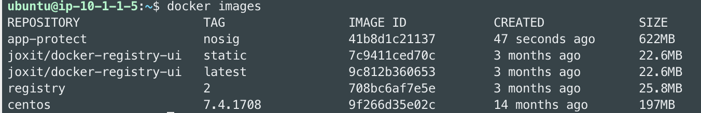
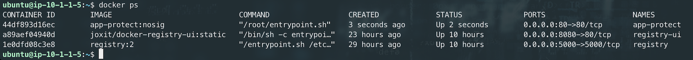

Step 5 - Update the Docker image with the Threat Campaign package¶
In this module, we will install the package Threat Campaign into a new Docker image.
Threat Campaign is a feed from F5 Threat Intelligence team. This team is collecting 24/7 threats from internet and darknet. They use several bots and honeypotting networks in order to know in advance what the hackers (humans or robots) will target and how.
Unlike signatures, Threat Campaign provides with ruleset. A signature uses patterns and keywords like ' or or 1=1. Threat Campaign uses rules that match perfectly an attack detected by our Threat Intelligence team.
For instance, if we notice a hacker managed to enter into our Struts2 system, we will do forensics and analyse the packet that used the breach. Then, this team creates the rule for this request.
A rule can contains all the HTTP L7 payload (headers, cookies, payload …)
Note
Unlike signatures that can generate False Positives due to low accuracy patterns, Threat Campaign is very accurate and reduces drastically the False Positives.
Note
NAP provides with high accuracy Signatures + Threat Campaign ruleset. The best of bread to reduce FP.
Threat Campaign package is available with the app-protect-signatures-7.repo repository. It is provided with the NAP subscription.
In order to install this package, we need to update our Dockerfile. I created another Dockerfile named Dockerfile-sig-tc
#For CentOS 7
FROM centos:7.4.1708
# Download certificate and key from the customer portal (https://cs.nginx.com)
# and copy to the build context
COPY nginx-repo.crt nginx-repo.key /etc/ssl/nginx/
# Install prerequisite packages
RUN yum -y install wget ca-certificates epel-release
# Add NGINX Plus repo to yum
RUN wget -P /etc/yum.repos.d https://cs.nginx.com/static/files/nginx-plus-7.repo
RUN wget -P /etc/yum.repos.d https://cs.nginx.com/static/files/app-protect-signatures-7.repo
# Install NGINX App Protect
RUN yum -y install app-protect app-protect-attack-signatures app-protect-threat-campaigns\
&& yum clean all \
&& rm -rf /var/cache/yum \
&& rm -rf /etc/ssl/nginx
# Forward request logs to Docker log collector
#RUN ln -sf /dev/stdout /var/log/nginx/access.log \
# && ln -sf /dev/stderr /var/log/nginx/error.log
# Copy configuration files
COPY nginx.conf log-default.json /etc/nginx/
COPY entrypoint.sh ./
CMD ["sh", "/entrypoint.sh"]
Note
You may notice one more package versus the previous Dockerfile in Step 4. I added the package installation app-protect-threat-campaigns
Follow the steps below to build the new Docker image:
- SSH to Docker App Protect + Docker repo VM
- Run the command
docker build -t app-protect:tc -f Dockerfile-sig-tc .<– Be careful, there is a “.” (dot) at the end of the command- Wait until you see the message:
Successfully tagged app-protect:tc
Note
Please take time to understand what we ran. You may notice 2 changes. We ran the build with a new Dockerfile Dockerfile-sig-tc and with a new tag tc. You can choose another tag like tcdate where date is the date of today. We don’t know yet the date of the TC package ruleset.
Destroy the previous running NAP container and run a new one based on the new image (tag tc)
Check if the new app-protect Docker image is available locally by running
docker images. You will notice the new image with a tag oftc.
Destroy the existing and running NAP container
docker rm -f app-protectRun a new container with this image
docker run -dit --name app-protect -p 80:80 -v /home/ubuntu/nginx.conf:/etc/nginx/nginx.conf app-protect:tcWarning
If you decided to change the tag
tcby another tag, change your command line accordinglyCheck that the Docker container is running
docker ps
Check the Threat Campaign ruleset date included in the new Docker container
docker exec -it app-protect cat /var/log/nginx/error.logNote
You can notice in one line of log, you get the
Signature dateand theThreat Campaign date.2020/07/01 17:03:14 [notice] 12#12: APP_PROTECT { "event": "configuration_load_success", "software_version": "3.74.0", "attack_signatures_package":{"revision_datetime":"2020-06-28T15:30:59Z","version":"2020.06.28"},"completed_successfully":true,"threat_campaigns_package":{"revision_datetime":"2020-06-25T19:13:36Z","version":"2020.06.25"}}
Simulate a Threat Campaign attack
- RDP to the
Jumphost(user / user)- Open
Postmanand select the collectionNAP - Threat Campaign- Run the 3 calls. They will trigger 3 different Threat Campaign rules.
- In the next module, we will check the logs in Kibana.
Note
Congrats, you are running a new version of NAP with the latest Threat Campaign package and ruleset.
Video of this module (force HD 1080p in the video settings)